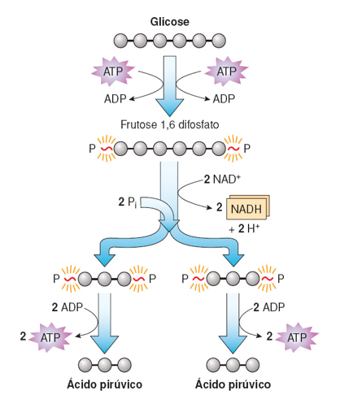

VISÃO GERAL DA GLICÓLISE

Formação de 2NADH: 2NAD⁺ + 4H⁺ + 4e⁻ → 2NADH + 2H⁺
Resumo da glicólise: C₆H₁₂O₆ + 2NAD⁺ + 4e⁻ + 4H⁺ + 4ADP + 4Pi → 2NADH + 4ATP + 2H⁺ + 2C₃H₄O₃
Consumo de 2ATP: 2ATP → ADP + 2Pi
Saldo total de 2ATP (4ATP formados – 2ATP gastos).